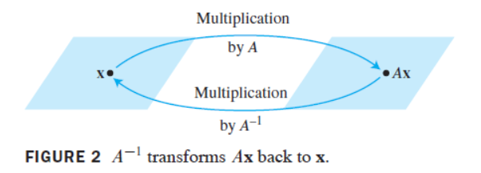

设\$A\$为\$n \times n\$矩阵, 则下列命题是等价的, 即对某一特定的\$A\$, 它们同时为真或同时为假.
a. \$A\$是可逆矩阵.
b. \$A\$等价于\$n \times n \$单位矩阵.
c. \$A\$有\$n\$个主元位置.
d. 方程\$A\boldsymbol{x} = \boldsymbol{0}\$仅有平凡解.
e. \$A\$的各列线性无关.
f. 线性变换\$ \boldsymbol{x} \mapsto A \boldsymbol{x} \$是一对一的.
g. 对\$ \mathbb{R}^n \$中任意\$ \boldsymbol{b} \$, 方程\$ A \boldsymbol{x} = \boldsymbol{b} \$至少有一个解.
h. \$A\$的各列生成\$ \mathbb{R}^n \$.
i. 线性变换\$ \boldsymbol{x} \mapsto A \boldsymbol{x} \$把\$ \mathbb{R}^n \$映上到\$ \mathbb{R}^n \$上.
j. 存在\$ n \times n \$矩阵\$C\$使\$ CA = I \$.
k. 存在\$ n \times n \$矩阵\$D\$使\$ AD = I \$.
l. \$A^T\$是可逆矩阵.
矩阵乘法对应于线性变换的复合. 当矩阵\$A\$可逆时, 方程\$ A^{-1} A \boldsymbol{x} = \boldsymbol{x} \$
可看作关于线性变换的一个命题.

线性变换\$ T: \mathbb{R}^n \to \mathbb{R}^n \$称为可逆的,
若存在函数\$ S: \mathbb{R}^n \to \mathbb{R}^n \$使得
$$
对所有\mathbb{R}^n中的\boldsymbol{x}, \quad S(T(\boldsymbol{x})) = \boldsymbol{x} \\
对所有\mathbb{R}^n中的\boldsymbol{x}, \quad T(S(\boldsymbol{x})) = \boldsymbol{x}
$$
我们称\$S\$是\$T\$的逆, 把它写成\$T^{-1}\$.
设\$ T: \mathbb{R}^n \to \mathbb{R}^n \$为线性变换, \$A\$为\$T\$的标准矩阵. 则\$T\$可逆当且仅当\$A\$是可逆矩阵. 这时由\$S(\boldsymbol{x}) = A^{-1} \boldsymbol{x}\$ 定义的线性变换\$S\$是满足 $$ 对所有\mathbb{R}^n中的\boldsymbol{x}, \quad S(T(\boldsymbol{x})) = \boldsymbol{x} \\ 对所有\mathbb{R}^n中的\boldsymbol{x}, \quad T(S(\boldsymbol{x})) = \boldsymbol{x} $$ 的唯一函数.